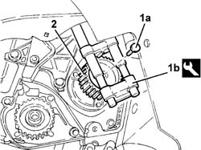
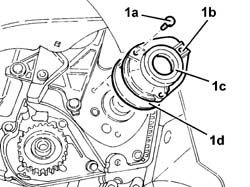
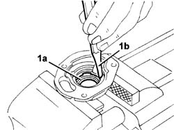
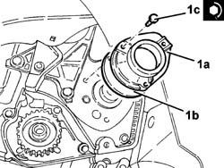
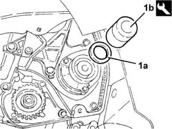

1020C10 oil seal cover on auxiliary shaft - r + r with timing belt removed and replace gaskets
- Path
- Procedures > 10 ENGINE > 1020 CRANKCASE SUMP AND COVERS > 1020C oil seal on auxiliary shaft > 1020C10 oil seal cover on auxiliary shaft - r + r with timing belt removed and replace gaskets
- Kind
- repair procedure (removal / refitting; the operation number is the code)
- Applies to
- all engines; all production periods
- Interactive page
- https://sloeber94.github.io/elrnDB-fDbl/en/#/2584341
Applies to: all engines; all production periods
 Removing
Removing
 Refitting
Refitting1. Undo the bolt (1a) securing auxiliary driveshaft pulley, using the tool (1b) for counter-torque.
 | Name | Country |
|---|---|---|
1b | Counter-torque | 1.860.765.000 |
2. Remove the auxiliary drivebelt.

Applies to: all engines; all production periods
1. Undo the bolts (1a) and remove the oil seal cover on the auxiliary driveshaft (1b) complete with oil seal (1c) and gasket (1d).

Applies to: all engines; all production periods
1. Working in a vice, remove oil sealing ring (1a) by fitting drift (1b) into the groove on the inner surface of the cover.

Applies to: all engines; all production periods
Refitting
Removing1. Fit the auxiliary driveshaft oil seal cover (1a), complete with new gasket (1b), and fix it tightening the bolts (1c) to the recommended torque.
 | Fastening | Component | Ø | Value (daNm) |
|---|---|---|---|---|
1c | Bolt | AUX SHAFT SEAL COVER | M6 | (Engine crankcase side) 0.9 |

Applies to: all engines; all production periods
1. Fit the new oil seal (1a), using the tool (1b).
| Name | Country |
|---|---|---|
1b | Fitting tool | 1.860.882.000 |

Applies to: all engines; all production periods
Refit the auxiliary drive pulley in its seat and secure it by tightening the bolt to the specified torque using the tool used for the dismantling for counter-torque.
| Fastening | Component | Ø | Value (daNm) |
|---|---|---|---|---|
- | Bolt | AUXILIARY SHAFT DRIVEN GEAR | M10 | 8 |
| Name | Country |
|---|---|---|
- | Counter-torque | 1.860.765.000 |